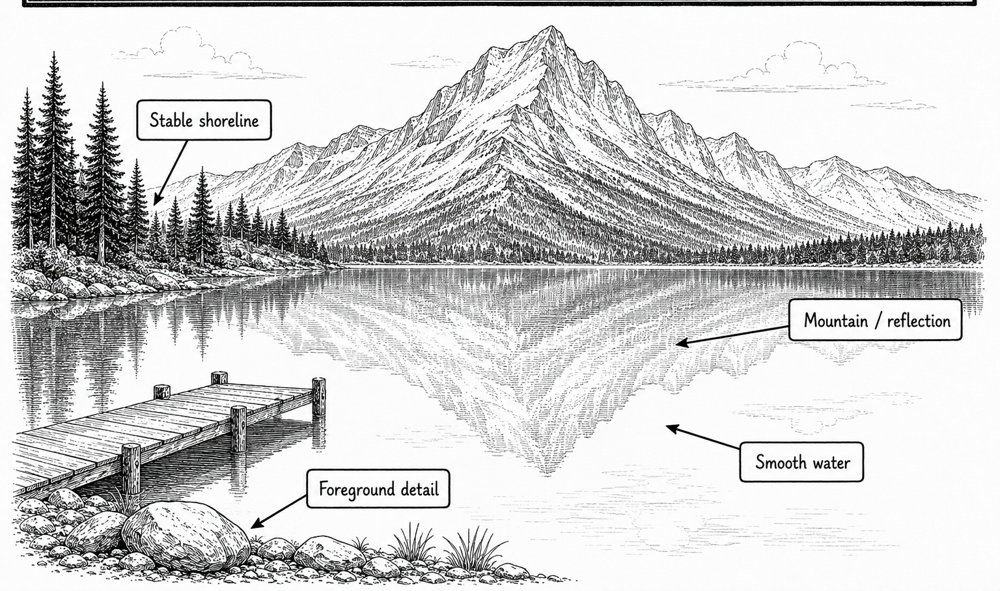

Primary real example
Nikon USA
Long-exposure examples of smoothed water.
Open the original exampleShot 42 | Any day | Trip-wide | Canada
Reference links for this shot.

These examples stay on their original sites. No photographer images are copied into this guide.
Primary real example
Long-exposure examples of smoothed water.
Open the original example